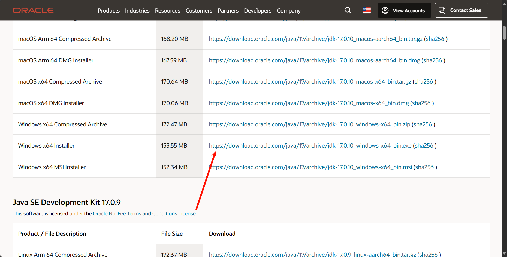
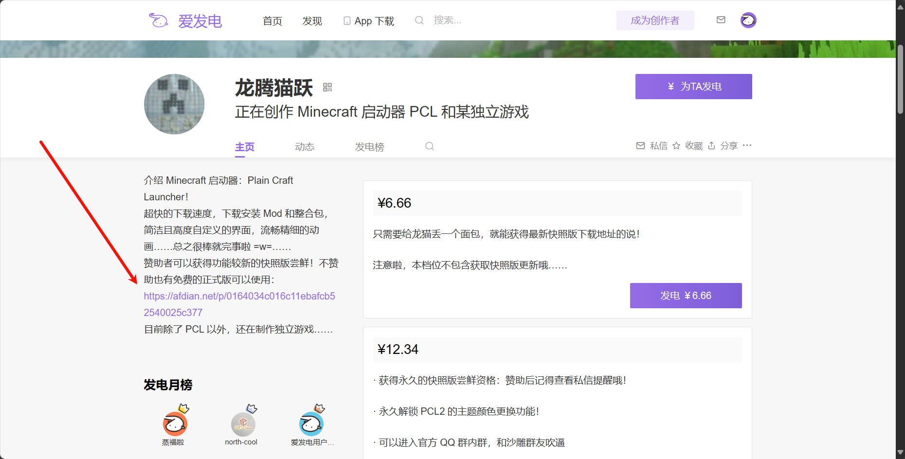
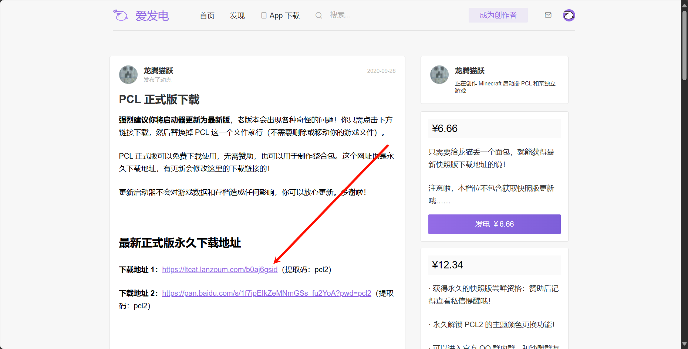
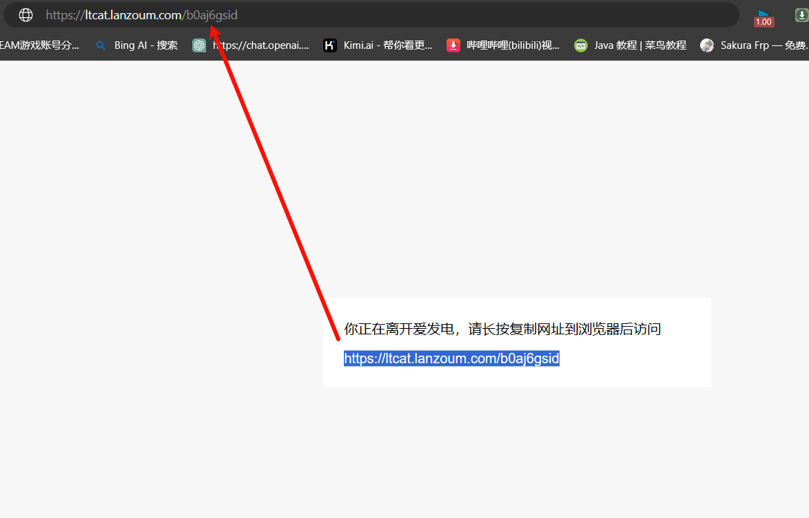
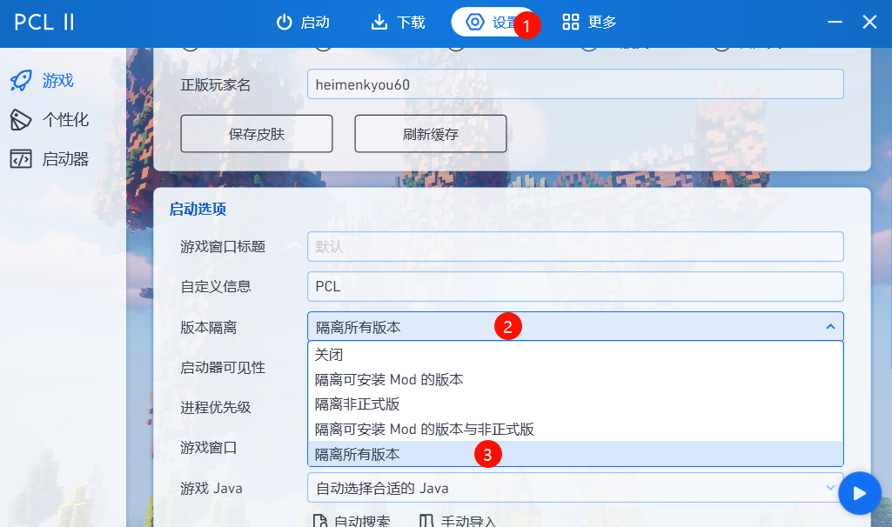
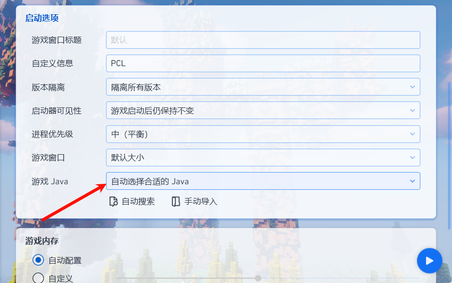
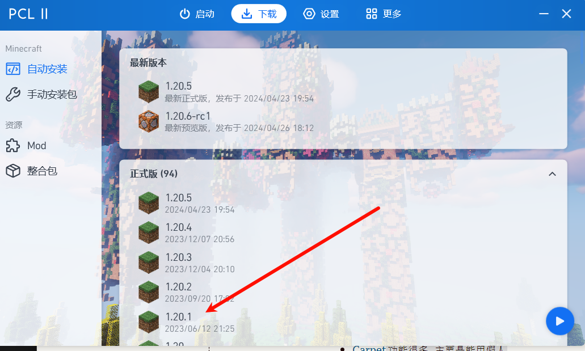
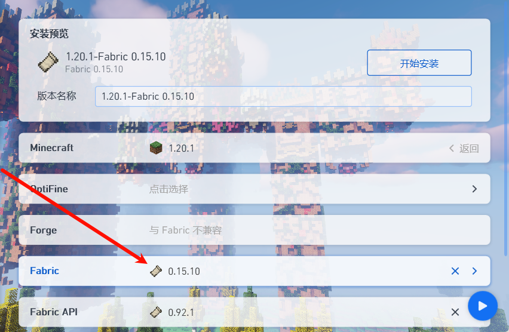
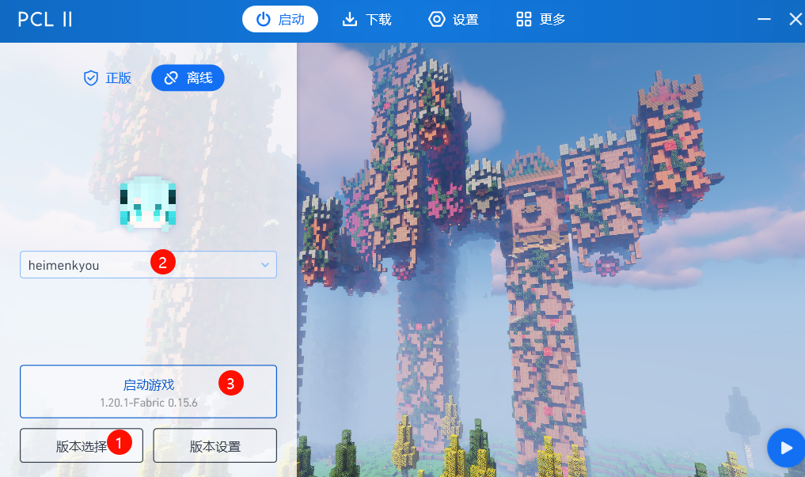
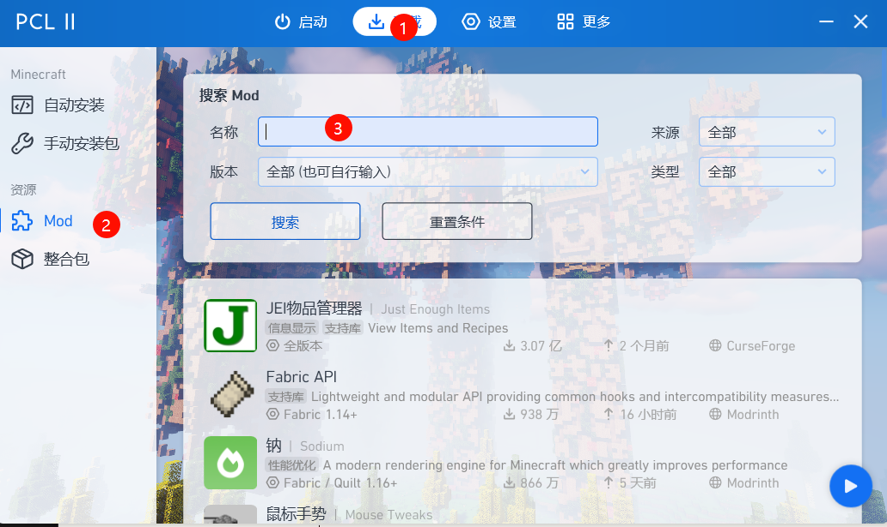

下载安装Minecraft游戏本体下载安装Java17*(必备)下载并配置PCL2一些附加的东西(非必需)推荐mod安装光影与材质安装如何购买正版通过Radmin Lan加入我的服务器远程协助操作疑难杂症笔记本配置挺高, 但帧数不高, 尤其一开光影就掉帧怎么回事脚注
如果你不想折腾,只想有个人, 帮你咔咔一阵全部弄好,那就跳转到
远程协助操作
访问https://www.oracle.com/java/technologies/javase/jdk17-archive-downloads.html
页面向下拉,找到Windows x64 Installer,点击后面的链接进行下载

下载完成后运行程序安装
搜索PCL2访问龙腾猫跃的爱发电主页, 或直接点击链接: https://afdian.net/a/LTCat
点击左下角的免费的正式版下载链接  
复制链接到地址栏即可 
点进去下载, 不放图了, 应该都会
将下载后的文件解压, 并将程序Plain Craft Launcher 2.exe存放在单独的文件夹1,例如D:/Games/PCL2,这个文件夹将存放所有的关于Minecraft的文件
双击运行Plain Craft Launcher 2.exe
必要设置:
在设置-版本隔离中选择隔离所有版本2

在设置-游戏Java中点击自动搜索,应当找到至少一个Java(即第一步安装的Java17)

在下载页面选择版本1.20.1,在下面的Fabric中选择第一个,此时应自动将Fabric API选中了,点击开始安装3


回到启动页面,此时应自动选择了刚安装的版本,如果没有则点击版本选择自行选择

在下载-Mod页面搜索并安装以下mod(选择1.20.1版本带有fabric字样的版本,如有前置mod需一并安装)

点击下面的链接可以查看mod详细介绍
Xaero的小地图小地图
Xaero的世界地图大地图
Carpet功能很多,主要是能用假人
Tweakeroo功能太多了,招牌功能灵魂出窍
MasaGadget可以渲染村民补货时间,第一本附魔书等
Bobby可以渲染服务器已经加载过的区块,变相增大视距
REI物品管理器查看合成配方
玉查看准心指的方块,实体等属性
万用皮肤补丁一个可以从网络或本地加载皮肤的模组
待定
有人需要我再写
方法一: 淘宝上找一个销量不错的商家代购,提供微软账号密码及验证码给客服代激活,由于商家的激活码一般是在阿根廷等低价区买到的,所以这种方法通常要比官网购买便宜
方法二: 打开Windows自带的微软商店(Microsoft Store),搜索Minecraft即可购买
该内容已失效, 我们换了联机软件, 访问http://www.luowb.cn/articles/natpierce/
点击免费下载,等待下载完成
打开安装程序并安装
安装成功后,在系统-防火墙例外中将允许所有应用勾选
网络中点击加入网络,网络名称为Lo_server密码为114514
在Minecraft多人游戏中添加服务器,ip为26.33.237.107,等待片刻便可入服5
点击下载精简版
打开下载的程序,告诉我你的设备代码与密码6
等待远程操作结束
(建议所有笔记本玩家都改一下这个设置)
那是因为Minecraft是在Java上运行的,而Windows默认给Java分配的核显,独显完全没工作,具体解决方法可参考视频: